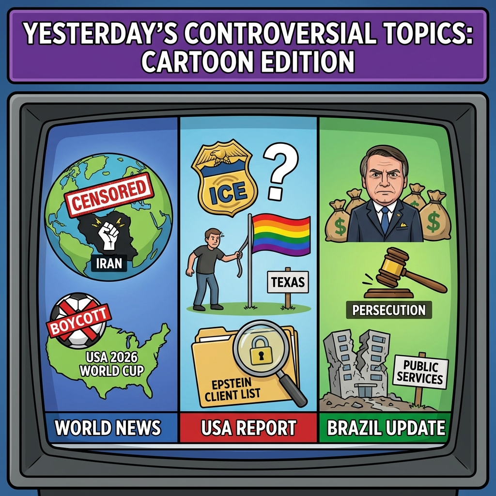

The Daily Globe: Iran's Protest Crackdown: Death Toll Estimates Reach 12,000, ICE Agents Accused of Murdering Unarmed Civilians, and Escândalos de Corrupção: Desvios e Propinas
Published on 2026-01-14

World
- Iran's Protest Crackdown: Death Toll Estimates Reach 12,000
Iranian government's violent suppression of anti-regime protests including internet blackout and disputed death tolls from hundreds to over 12,000, sparking international condemnation.
- International Boycott of 2026 FIFA World Cup in US
Fans and activists canceling tickets en masse to protest US immigration policies and political climate under Trump.
- Iran Protest Death Toll Confirmed at 648
Human Rights Activists News Agency reports rising casualties from mass protests amid government crackdown.
USA
- ICE Agents Accused of Murdering Unarmed Civilians
Reports of ICE killing a mother of three in Minnesota and other incidents, with accusations of excessive force and cover-ups.
- Texas Removes LGBTQ+ Symbols; Trans Bans Debated
Taxpayer money used to remove pride symbols, Supreme Court on trans bans, fueling culture war debates.
- Demands Intensify for Epstein Client List Release
Accusations of government hoax and cover-up on unreleased Jeffrey Epstein documents.
Brazil
- Escândalos de Corrupção: Desvios e Propinas
Fraudes no INSS, desvios de emendas parlamentares, pagamento de propina e esquemas como Petrolão.
- Perseguição Política e Prisões Arbitrárias
Acusações de tortura a idosos, prisões políticas incluindo Bolsonaro, decisões controversas do STF.
- Narcoterrorismo e Colapso Social
Tráfico de drogas, órgãos e infantil; pobreza extrema, colapso na saúde e educação.
Topic Index
- iran-protests
- protest-crackdown
- world-cup-boycott
- immigration-crackdown
- ice-violence
- lgbtq-rights
- trans-bans
- epstein-coverup